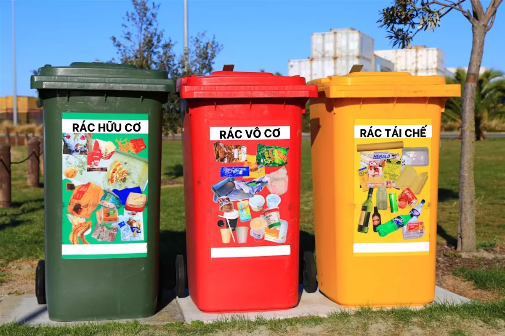
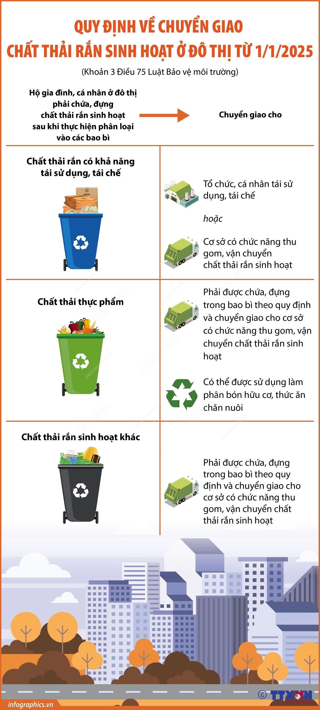
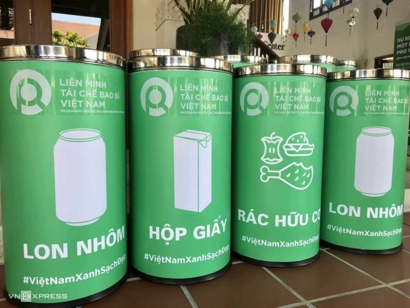

Theo Luật Bảo vệ môi trường năm 2020, tại Điều 75 về phân loại, lưu giữ và chuyển giao chất thải rắn sinh hoạt, rác thải sinh hoạt phát sinh từ hộ gia đình và cá nhân ở Việt Nam hiện nay được phân loại thành ba nhóm chính. Việc phân loại này nhằm nâng cao hiệu quả tái chế, giảm lượng rác phải chôn lấp và góp phần bảo vệ môi trường.
Những loại rác có thể được thu hồi để tái chế thành sản phẩm mới.
Giúp tiết kiệm tài nguyên và thúc đẩy kinh tế tuần hoàn.
Rác hữu cơ dễ phân hủy sinh học từ sinh hoạt hằng ngày.
Có thể ủ thành phân compost để tái sử dụng.
Những loại rác khó tái chế hoặc không còn giá trị sử dụng.
Thường được xử lý bằng đốt rác hoặc chôn lấp hợp vệ sinh.
Luật Bảo vệ môi trường năm 2020 (Điều 75) còn quy định rõ trách nhiệm của hộ gia đình và cá nhân trong việc lưu giữ và chuyển giao rác thải sinh hoạt.
Sau khi được phân loại, rác thải sinh hoạt phải được lưu giữ riêng trong các bao bì hoặc thiết bị chứa phù hợp theo từng loại rác.
Ngoài ra, các hộ gia đình và cá nhân cần tuân thủ các quy định sau:

Sau khi được lưu giữ, rác thải sinh hoạt sẽ được chuyển giao cho đơn vị thu gom và vận chuyển rác thải theo quy định của địa phương.
Các quy định chính bao gồm:
Sau khi thu gom, rác thải sẽ được đưa đến các cơ sở xử lý như:

Một điểm quan trọng trong hệ thống quản lý rác thải tại Việt Nam là việc phân loại rác tại nguồn đã trở thành nghĩa vụ bắt buộc theo pháp luật. Theo Luật Bảo vệ môi trường 2020 (áp dụng từ năm 2025), người dân phải:
Nếu không thực hiện, người dân có thể bị xử phạt hành chính theo quy định của pháp luật. Mức phạt có thể lên đến 5 triệu đồng tùy theo mức độ vi phạm và quy định của địa phương.
Trước đây, việc phân loại rác chủ yếu mang tính khuyến khích và được thí điểm ở một số khu vực, nhưng chưa có chế tài rõ ràng. Tuy nhiên, từ khi luật được ban hành, phân loại rác không còn là ý thức cá nhân đơn thuần mà đã trở thành trách nhiệm bắt buộc của mỗi người.

Trong quá khứ, chúng ta xử lý rác theo mô hình “khai thác → sử dụng → vứt bỏ”, khiến môi trường ngày càng quá tải.Ở hiện tại, mô hình kinh tế tuần hoàn mới: rác → tái chế → quay lại sản xuất → tiếp tục sử dụng.
Nếu không phân loại rác, việc tái chế gần như không thể thực hiện.